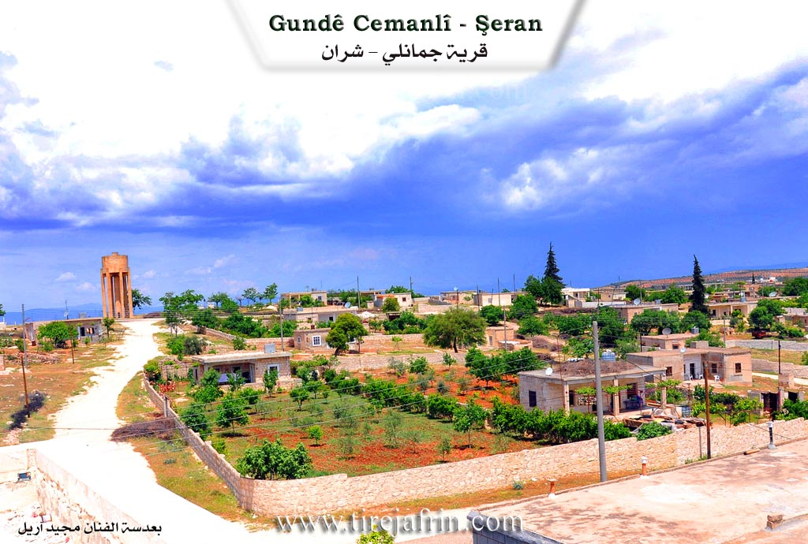
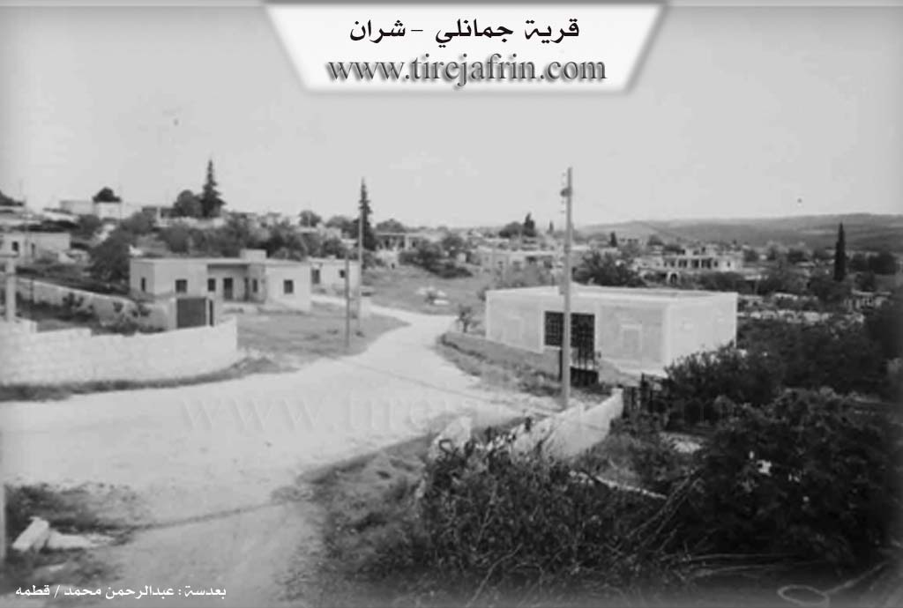

General Information
Nahiya (Subdistrict)
Şera
Also Known As
Cema, Jaman, Jamanli, Çema, اورمارو, جمان, جمانلي, چمانلي, جامو
Families, Clans, etc.
Hespisîyo, Mala Elî Şan, Mala Elî Şêr, Mala Hemê, Mala Hemîkê, Mala Hûrê, Mala Me'mê, Mala Misê, Mala Ne'sê, Mala Qelqê, Mala Îbê, Mala Ûsê

Photos


Basic Information about Çema
Source: Ax û Welat
Etymology: Named Çema meaning river or waters, derived from the abundance of water sources like Geliyê Sîmanê and its proximity to the Efrîn river
Foundation Date/Period: Pre-Islamic era
Springs: Kaniya Sîmon, Kaniya Keres
Shrines: Şêx Mihemed
Ruins: Xirabê Sîman, Xirabê Çartaqê, Naûs
Trees: Merxê
Wells: Bîreke polê
Other Landmarks: Geliyê Sîmanê, Çemê Efrînê, Çiyayê Parsê, Qestel Cindo
Summaries
I. Summary from TirejAfrin Site (English) of Çema
According to the book 'جبل الكرد' 'Mountain of the Kurds' / Afrin City / Geographic Study:
1 - PhD/Villages/Çema (چمانلي) (Jaman جمان) /956N - 428E 3km - 585 m/:
- Čema (چه ما): Name of a Kurdish tribe, there are some of them around Badlis (بدليس), /Lerkh p.49/.
- A medium-sized village, located on a plateau whose western slopes descend steeply toward the Afrin River (نهر عفرين) valley. Pine forests spread on the slopes surrounding it.
According to the book 'عفرين.... نهرها ورواية الخضراء' 'Afrin City.... Its River and Green Hills':
Jamanli (جمانلي): A village in Jabal al-Kurd (جبل الكرد) belonging to Sheran district (ناحية شران), Afrin City region (منطقة عفرين), Aleppo Governorate (محافظة حلب), (939 N).
It is a large village located on a limestone plateau with white clayey soil 2km from the town of Sheran (شران) to the north. It is bounded to the north by a steep and rugged slope and wide plain planted with olive trees and the village of Ali Bazanli (علي بازانلي) and Qargin Large (قارقين كبير) at the bottom of the Afrin River (نهر عفرين) valley. To the south by plain and valley and mountain chain and slopes and the village of Sinkarli (سنكرلي). To the east by slope and deep valley and Omranli spring (نبع عمرانلي) and mountain chain and the village of Omranli (عمرانلي). To the west by mountain slope planted with olive and forest trees and grapes and the town of Sheran (شران). The number of its houses is about 125 houses and its age is about 350 years. Its old dwellings are stone-clay with wooden roofs and the modern ones are of stone and cement spread east, west and south. It has an electricity network and state drinking water and it has an elementary school and a telephone center and a mosque and it is a village returning to the municipality of Sheran (شران) administratively. Its residents work in olive and grape cultivation and raising sheep and goats. It is connected to Sheran district (ناحية شران) by a paved road. There is a shrine of Sheikh Mohammed (شيخ محمد) on the western side of the village and it is a beautiful and sweet village located among olive trees from all directions and fruit trees and among its most important families is the family of Mohammed Rashid (محمد رشيد).
Village mayor: Anwar Mohammed (أنور محمد)
II. Summary of Çema from Ax û Welat
Source: https://www.youtube.com/watch?v=SxDx9W2dsUw
The village of Çema, located in the Şera district of the Efrîn canton, is a settlement defined by its relationship with water and deep historical roots. The name Çema itself is derived from the word for "river," referencing the abundance of water sources in the area, particularly the Efrîn river to the west and the waters flowing from Geliyê Sîmanê. According to village elder Hec Qedrî, the history of the village is ancient, with origins lost to time, though narrators suggest the site may have been an inhabited city in the pre Islamic era.
The historical significance of Çema is visible in its ruins. The village contains rock cut structures known as Naûs. An expert, Abdullah, explains that these are not natural caves but hand carved tombs or dwellings, likely dating back to the Roman or Komagene period. He compares them to similar structures found near Dîlok and notes they feature architectural elements like arched burial niches. Other historical ruins around the village include Xirabê Sîman and Xirabê Çartaqê.
Socially, the village consists of several longstanding families. Hec Qedrî identifies Mala Elî Şêr (also referred to as Mala Elî Şan) as one of the first families. Other prominent lineages include Mala Îbê, Mala Misê, Mala Hemê, Mala Me'mê, Mala Ne'sê, Mala Ûsê, and Hespisîyo. The elder also recounts a migration event where three families—Mala Qelqê, Mala Hemîkê, and Mala Hûrê—left the village generations ago due to internal disputes.
Water was the center of community life. Residents like Fatme and Şaziye recall the days before modern plumbing when women from Çema and neighboring villages like Qerqîna and Ba'rava would gather at the spring in Geliyê Sîmanê. This was a social hub where they washed clothes, cleaned wheat, and shared meals under the shade of massive trees. One woman recounts a dramatic story from forty years ago when a flood at the spring was so powerful it swept away an ox (ga) belonging to her family.
The spiritual life of Çema revolves around the shrine of Şêx Mihemed, located on the high ground of the village. Villagers, particularly women, visit on Thursdays to light candles ("şem'a") and make vows. A woman at the shrine mentioned praying for her son who had been detained by Cebhet el Nesra. Historically, a large Merxê tree stood at the site, though it has since fallen. The villagers also practice a rain summoning ritual involving a figure or ladle called "dahen," where men and youths tour the village at night to request rain during droughts.
Culturally, Çema is renowned for a specific folk dance called Govenda Awî Reşko or Govenda Rişkû. The Muxtar explains that this dance is unique to their village and pantomimes agricultural tasks, such as killing fleas and winnowing wheat at the threshing floor, serving as a reminder of personal hygiene and hard work.
II. Ax û Walat Book 1
THE VILLAGE OF ÇEMA
10.3.2016
The village of Çema is affiliated with the Şera district of the Efrînê canton, located about 2 km from the town of Şera and 20 km north of the city of Efrînê.
The name of the village Çema comes from the area's richness in water and streams. There is also another village with the same name in Northern Kurdistan near Diyarbekrê, and it is said that the residents of both villages are related. The site of the village is ancient, and there are many caves in it. It is estimated that people lived in those caves in ancient times.
160
About 200 houses and nearly 2000 people live in the village. The Elîşan family was the first family to settle in the village of Çema, and later 3 families emerged from it; the family of Îbê, Misir, and the family of Hemê, and all three families are in the village. Along with these families, many other families came and settled here, such as:
The family of Hesîb, Ne’ê Eşûtê, Hesen, Ûsê, and the family of Hec Şerîf.
There are 2 martyrs from the village who were martyred in the Kurdistan Revolution, and their names are: (Kawa and Ekîn). The village commune has also been named Ş. Kawa.
The villagers make their living from agriculture, from olive groves and vegetable gardens with gourds, okra, tomatoes, pumpkins, and fruit trees like apricots, almonds, pomegranates, apples, and peaches. They sell their products in the markets of Efrînê and also plant fields of wheat, barley, lentils, chickpeas, and fenugreek. Along with agriculture, some families own livestock like sheep and goats and make a living for their families by selling their products.
After the Rojava Revolution, 4 sewing workshops were opened in the village, and about 100 people work there, making a living. This has allowed settlement and stability to occur in the village, and job opportunities have opened up for the young men and women of the village.
161
To the west of the village is the Efrînê River, which has been turned into a lake behind the Meydankê Dam, located 2 km south of the village. To the north of the village are the Sîmon spring and the Kerkez spring; villagers irrigate their gardens from them. Also to the south is Xirab Sîmon – it is an ancient cave that was used as a human dwelling. It is said that the site of the village was an ancient city, and this was in the pre-Islamic eras.
To the east of the village is (Bîrê Polê), and it is a very ancient water well. Under it, there is a water channel whose water comes from the (Parsê) mountain of (Qestel Cindo). On that channel, there are 3 other water wells – some time ago, the water of those wells was pumped into a water reservoir, and drinking water was distributed to many villages, such as: Gabeleka, Omera, Be’rava, and Qerqîna.
To the east of the village are the (Baflon) and (Şifaqê) mountains, planted with olive trees, and there are also forests of pine trees that were planted by the state.
To the south of the village are the villages of Sînka and Şera. To the north is the village of Omera, and to the west is the (Kurtê Bîrka) well.
A shrine named (Şêx Mihemed) is known to be at the top of the village. The people of the village visit it on Friday evenings and light candles. They also pray to God for their wishes and hopes to be fulfilled. Now
162
the area around the shrine has become the village cemetery. On the mornings of festival days, the people of the village visit this shrine again.
There are about 20 caves in the village. There is a cave that, through secret paths under the ground, reaches the Çawîş cave in the village of (Be’rava).
The water pump station that used to supply 5 villages with water is at the top of the village, but now it is only used for the village of Çema. There is a primary school where the village children study up to the 6th grade, and there is a mosque in the middle of the village where the villagers perform their prayers.
There are 2 olive presses in the village for pressing the villagers' olives.
Because the village is large, there are shops for all kinds of goods in the village, and the villagers get their necessities from them.
Transcriptions and Subtitles
| Source | Video | Subtitles | Transcript |
|---|---|---|---|
| Ax û Welat 1 | Watch Video | Download SRT | View Transcript |
Possible Village Name Meaning of Çema
"Čema" is the name of a Kurdish tribe.
Source: TirejAfrin Site